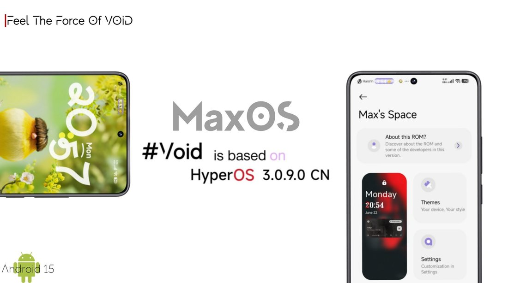

MaxOS Void
Redmi Note 11T Pro / Pro+ / POCO X4 GT / Redmi K50i
Codename
xaga
Project MaxOS is a custom ROM project based on Xiaomi HyperOS. It aims to bring a distinct project identity and a consistent experience to several supported devices.
MaxOS Void is available for these devices. Each card lists the codename, download and links to the features and screenshots.

Device not listed? Contact me on Telegram to request it.